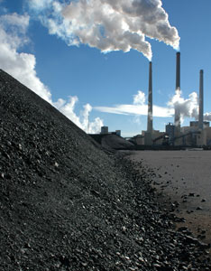

ISTOCKPHOTO/ANDY OLSEN
Ninety-nine percent of the men and women who publish in refereed journals on climate have concluded that humans burning fossil fuels — coal, oil, natural gas — is the major source of the carbon dioxide increase in the Earth’s atmosphere.